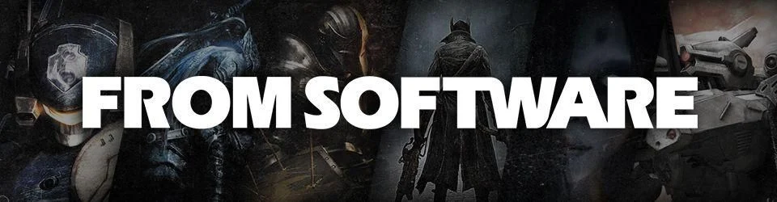
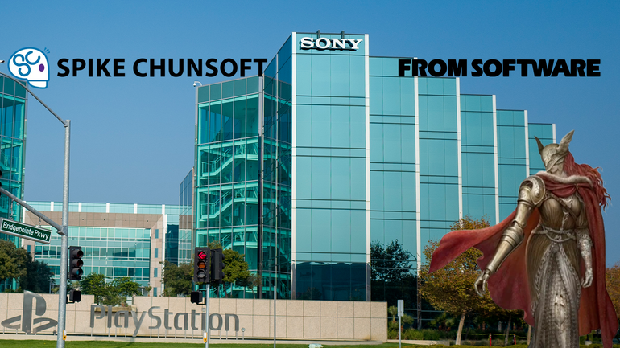
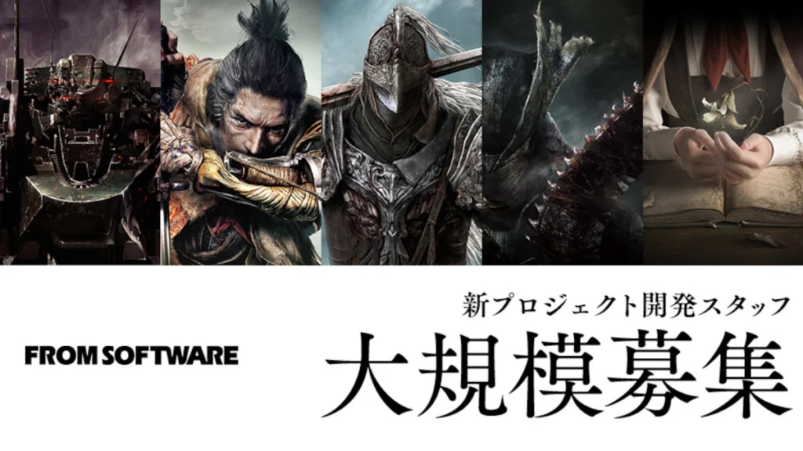

The Tarnished Archives
La Saga FromSoftware
Découvrez la magie et les défis de chaque jeux FromSoftWare
Catalogue
-
Demon’s Souls
 2009
2009Dans sa quête de pouvoir, le 12e roi de Boletaria, le roi Allant, s'appropria les anciens arts de l'âme, réveillant ainsi un démon aussi vieux que le monde, l'Ancien. Une épaisse brume et des créatures cauchemardesques ayant soif d'âmes humaines envahirent la région suite au réveil de l'Ancien.
-
Dans Dark Souls, on joue un mort-vivant marqué par le Signe Sombre, condamné à notre perdre peu à peu son humanité dans un monde qui s'effondre. Attiré jusqu'au royaume brisé de Lordan, on doit traverser des lieux hostiles, affronter des seigneurs déchus et comprendre le rôle de la Flamme primordiale. Au bout du chemin, c'est à nous de décider si l'Âge du Feu doit continuer encore un peu... ou laisser place aux Ténèbres.
2011Dark Souls

-
Dark Souls II
 2014
2014Dans Dark Souls II, on incarne un être maudit qui rejoint Dragleic pour tenter de se libérer de notre malédiction. On découvre un royaume ravagé, hanté par les erreurs du roi et par âmes anciennes qui refusent de disparaître.De combat en combat, on s'approche du coeur de Drangleic et d'un choix difficile face au cycle sans fin de ruine et de renaissance.
-
Dans Bloodborne, on incarne un Chasseur qui arrive à Yharnam, une ville malade où les habitants se transforment peu à peu en bêtes. Au fil d'une nuit qui vire au cauchemar, on remonte les rues sombres, les cathédrales abandonnées et des dimensions plus étranges encore.En cherchant la source du "remède" et de la chasse, on se trouve face à des horreurs cosmiques et à la vraie nature du rêve dont on doit s'éveiller.
2015Bloodborne

-
Dark Souls III
 2016
2016Dans Dark Souls III, on joue un Mort-vivant sans braise, réveillé alors que la FLamme fondatrice est sur le point de s'éteindre pour de bon. Notre mission est de ramener de force les seigneurs des Cendres sur leur trône pour raviver le feu une dernière fois. En traversant un monde où les âges passés se mélangent et se meurent, nous devrons décider quoi faire de cette flamme qui ne veut plus brûler.
-
Dans Sekiro: Shadows Die Twice, vous incarnez le « loup a un bras », un guerrier déshonoré et défiguré sauvé de la mort. Chargé de protéger un jeune seigneur descendant d'une ancienne lignée, vous devenez la cible de nombreux ennemis vicieux, dont le dangereux clan Ashina. Lorsque le jeune seigneur est capturé, rien ne vous arrêtera dans votre périlleuse quête pour restaurer votre honneur, pas même la mort.
2019Sekiro : Shadow Die Twice

-
Elden ring
 2022
2022Dans Elden Ring, on joue un Sans-éclat, un exilé rappelé dans l'Entre-terre après l'explosion du Cercle d'Elden. Libre de voyage à cheval à travers plaines, marais, châteaux et capitales en ruines, il affronte des demi-dieux prêts à tout pour garder leurs fragment de pouvoir. Au fil de l'aventure, on gagne en force et finit par décider du nouveau visage de l'Entre-terre, en suivant l'Ordre établi ou en le brisant
Studio
L'histoire de ce studio mythique !
FromSoftware est une entreprise japonaise de développement de jeux vidéo, fondée en 1986 et située à Tokyo. Elle est notamment connue pour avoir créé les séries Dark Souls et Armored Core, ainsi que les jeux Bloodborne (2015), Sekiro: Shadows Die Twice (2019) et Elden Ring (2022).
Présentation de l'entreprise
Histoire
FromSoftware a été fondée le 1er novembre 1986, et a développé un logiciel de productivité pendant les premières années de son existence. Le premier jeu vidéo du studio n'est venu qu'en 1994, quand est sorti King's Field comme titre de lancement pour la PlayStation. En avril 2014, la société est rachetée par le groupe japonais Kadokawa Corporation. À la suite de ce rachat, Hidetaka Miyazaki, fort des succès de Demon's Souls, et de sa suite spirituelle Dark Souls, devient président du studio le 24 mai de la même année.
Culture d'entreprise
En mai 2022, FromSoftware compte 349 employés. Plusieurs témoignages évoquent une forte attrition, liée à des heures supplémentaires fréquentes et à des salaires souvent inférieurs aux standars du marché. La réputation du studio sur les sites d’évalutation souligne une culture de travail exigeante et peu gratifiante, avec des rémunération jugées basses au regard du coût de la vie à Tokyo. Le 4 octobre 2024, l’entreprise annonce une revalorisation salarial prévue pour la nouvelle année fiscale, avec une augmentation moyenne de 11,8%.
PDG de l'entreprise
Miyazaki grandit dans une pauvreté à Shizuoka, sans ambitions particulières. il passe l’essentiel de son temps à lire des romans et des mangas empruntés à la bibliothèque, sa famille n’ayant pas les moyens de les acheter. Après un diplôme en sciences socals à l’université Keiō de Tokyo, il deviens comptable chez Oracle. La découverte du jeu Ico (2001), apprécié pour son atomsphère unique et son game design, le pousse à changer de voie : il rejoint FromSoftware en 2004. Il commence comme développeur sur Armored Core: Last Raven (2005), puis devient directeur sur Armored Core 4 (2006) et For Answer (2008). Gagnant en liberté créative, il développe Dark souls (2011), qu’il voit comme un “successeur spirituel” de Demon’s Souls. Le succès du jeu lui permet de devenir président du studio en mai 2014. Il supervise ensuite Dark Souls II tout en créant Bloodborne(2015), puis revient à la réalisation pour Dark Souls III(2016)